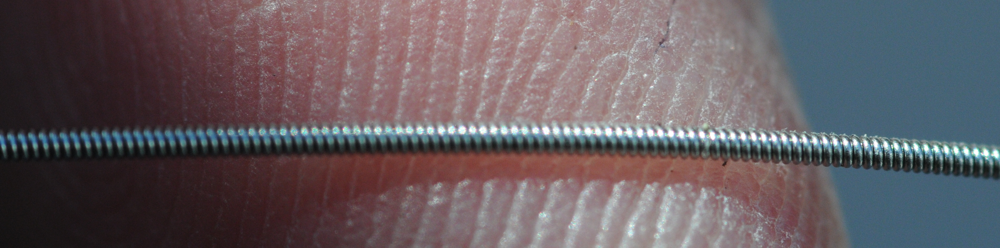
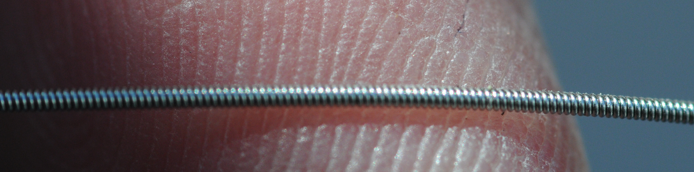

The Elphie owns a big (mother-sized) siter. It is big, ornate and passers by admire it.
The Elphie owns two baby siters - also known as siter panerus or, in google translate, as the successor siter. Neither of these children has had an easy life. The older one came with the original instruments and had pegs which slipped terribly. This was fixable.
The newer one is prettier, but had other problems and sat on a shelf neglected for much of its childhood. This is the repair story.
The Elphie's siter has a twin brother. The bass strings broke during their first tuning. A few others popped and some of the pegs slipped badly. This meant we knew what to expect.
Guitar strings are rated in thousandths of an inch and come in a wild variety of metals, with different coatings and with or without external winding.
Wire for pianos, dulcimers (hackbrett), cembalo is measured in sensible units (mm). Unlike guitar strings, the fanciest Steinway and oldest honkey-tonk use fairly plain steel.
The first string we played with in the Elphie went
pop
, so we knew there would be problems and this was the starting point from the top:
and on the base, you can see the on the top row how one string is missing from the fourth place and you can also see how things were wired.
 These are guitar strings. A few were crossed over. The lowest strings were what guitarists call 16 thousandths of an inch wound steel:

These are guitar strings. A few were crossed over. The lowest strings were what guitarists call 16 thousandths of an inch wound steel:

If you look really closely, you can see the guitar string ball is sometimes there and sometimes not.

Very gently, I put some tension on the strings. The bass strings
generally went
pop
. The best thing to do is get rid of them.

Going a bit further, some of the higher strings went
ping
. If one member of a pair popped, I pulled out its partner in the pair. The pelog side now looked like this
 and from the base, it looked like this.
and from the base, it looked like this.

It was time to get out the pliers and some fresh wire.

The instrument wire came out and many hours later, the pelog side had wire...

More hours later..
 and the pelog side,
and the pelog side,
 .
.
The base is OK, but there is a mixture of new and old strings.

The siter is happy to be in the company of his twin brother.


Wound guitar string was a bad choice. Even when it does not break, it sounds muddy and out of place. 0.37 mm is OK for the lower strings. The instrument had something like 0.27 mm on the higher strings, but this is probably a bit too thick.
It turns out, that many of the higher strings were not breaking during tuning. They were simply not fixed on the peg and looked like this.

The new strings look like this

Obviously it would be nicer if there were one or two kinds of wire.
I also think 0.27 is a bit thick. There is a lot of tension on the higher strings and might be a bit uncomfortable to play.